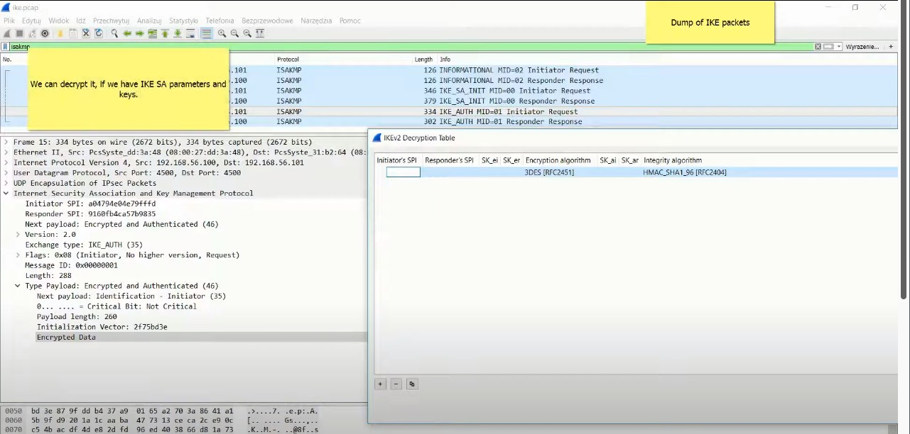

Airren Ren
Monday, January 1, 1
strongswan
When reading/adjusting any StrongSwan configurations, remember these important words:
left is local to the machine it’s stated on; right is remote in the same manner
So, on the server side, left is local to the server and on the client side, left is local to that client.
check the X509 cert details
1openssl x509 -text -noout -in /etc/ipsec.d/private/sunKey.pem
Ubuntu Set up IPsec Tunnel
1docker run --rm -d -i --network host --name cnf --user root -v /home/ubuntu/entrypoint.sh:/entrypoint.sh --privileged cnf:pro sleep infinity
2
3
4docker run --rm -i -d --network host --name cnf --user root -v /home/ubuntu/entrypoint.sh:/entrypoint.sh --privileged cnf:pro bash -c '/entrypoint.sh'
Install StrongsWan
1sudo apt update && sudo apt install strongswan strongswan-swanctl strongswan-pki strongswan-charon charon-cmd charon-systemd -y
2
3
4sudo apt remove strongswan strongswan-swanctl strongswan-pki strongswan-charon charon-cmd charon-systemd -y
在如下两台机器之间 建立 host-to-host的ipsec tunnle, 以下配置过程整理自Strongswan.
1| 10.95.62.25 | === | 10.95.62.114 |
2 moon sun
生成证书
使用strongswan的PKI tool 创建证书。
1# 创建 root 私钥
2pki --gen --outform pem > caKey.pem
3# 生成 root CA
4pki --self --in caKey.pem --dn "C=CH, O=strongSwan, CN=strongSwan CA" --ca --outform pem > caCert.pem
5
6# 生成 node-1 私钥
7pki --gen --outform pem > moonKey.pem
8# 使用 root ca签发 node-1 端证书
9pki --issue --in moonKey.pem --type priv \
10--cacert caCert.pem --cakey caKey.pem \
11--dn "C=CH, O=strongSwan,CN=moon.strongswan.org" --san moon.strongswan.org \
12--outform pem > moonCert.pem
13
14# 生成 node-2 私钥
15pki --gen --outform pem > sunKey.pem
16# 使用 root ca签发 node-1 端证书
17pki --issue --in sunKey.pem --type priv \
18--cacert caCert.pem --cakey caKey.pem \
19--dn "C=CH, O=strongSwan,CN=sun.strongswan.org" --san sun.strongswan.org \
20--outform pem > sunCert.pem
Host-to-Host 配置
Configuration on host moon:
1 sudo cp caCert.pem /etc/swanctl/x509ca/caCert.pem
2 sudo cp moonCert.pem /etc/swanctl/x509/moonCert.pem
3 sudo cp moonKey.pem /etc/swanctl/private/moonKey.pem
4
5/etc/swanctl/swanctl.conf:
6
7 connections {
8 host-host {
9 #remote_addrs = 52.9.61.247
10 pools=client_pool
11
12 local {
13 auth=pubkey
14 certs = moonCert.pem
15 }
16 remote {
17 auth = pubkey
18 id = "C=CH, O=strongSwan, CN=sun.strongswan.org"
19 }
20 children {
21 net-net {
22 remote_ts=192.168.0.1/32
23 start_action = trap
24 }
25 }
26 }
27 }
28 pools{
29 client_pool{
30 addrs=192.168.0.1
31 }
32}
Configuration on host sun:
1sudo cp caCert.pem /etc/swanctl/x509ca/caCert.pem
2sudo cp sunCert.pem /etc/swanctl/x509/sunCert.pem
3sudo cp sunKey.pem /etc/swanctl/private/sunKey.pem
4
5/etc/swanctl/swanctl.conf:
6
7 connections {
8 host-host { # connection name
9 remote_addrs = 34.230.111.156
10
11 local {
12 auth = pubkey
13 certs = sunCert.pem
14 }
15 remote {
16 auth = pubkey
17 id = "C=CH, O=strongSwan, CN=moon.strongswan.org"
18 }
19 children {
20 host-host {
21 remote_ts=10.20.0.118/32
22 start_action = trap
23 }
24 }
25 }
26 }
上述配置是 是用key做认证，下面举个使用pre-shared key的例子
1 # configuration on moon
2 connections {
3 host-host {
4 remote_addrs = 10.95.62.114
5
6 local {
7 auth=psk
8 id = "moon.strongswan.org"
9 }
10 remote {
11 auth = psk
12 id = "sun.strongswan.org"
13 }
14 children {
15 net-net {
16 start_action = trap
17 }
18 }
19 }
20 }
21 secrets{
22 ike-h2h{
23 id-moon = "moon.strongswan.org"
24 id-sun = "sun.strongswan.org"
25 secret = mysecret
26 }
27}
28
29 # configuration on sun
30 connections {
31 host-host { # connection name
32 remote_addrs = 10.95.62.25
33
34 local {
35 auth = psk
36 id = "sun.strongswan.org"
37 }
38 remote {
39 auth = psk
40 id = "moon.strongswan.org"
41 }
42 children {
43 host-host {
44 start_action = trap
45 }
46 }
47 }
48 }
49 secrets{
50 ike-h2h{
51 id-moon = "moon.strongswan.org"
52 id-sun = "sun.strongswan.org"
53 secret = mysecret
54 }
55 }
配置完成后，可以使用swanclt --load-all 使配置生效。
如果给initiator 分配一个Virtual IP.
Initiator 获得虚拟IP后会再 IP table 220 中增加对应IP的路由方式。
SmartCard demo with OpenSC
Build Strongswan with pcks11
1# install essential dependency
2sudo apt install build-essential libgmp-dev libunbound-dev libldns-dev -y
3git clone https://github.com/strongswan/strongswan.git
4./autogen.sh
5# config
6# ./configure --prefix=/usr --sysconfdir=/etc --enable-eap-mschapv2 --enable-kernel-libipsec --enable-swanctl --enable-unity --enable-unbound --enable-vici --enable-xauth-eap --enable-xauth-noauth --enable-eap-identity --enable-md4 --enable-pem --enable-openssl --enable-pubkey --enable-farp --enable-pkcs11
7./configure --prefix=/usr --sysconfdir=/etc --enable-pkcs11 CFLAGS="-DDEBUG_LEVEL=1"
8make
9sudo make install
10sudo systemctl daemon-reload
11sudo systemctl restart strongswan-starter.service
Build virt_cacard
virt_card using libcacard, vitualsmartcard’s vpcd and softhsm2 to provide PCSC accessible virtual smart card.
1# install essential dependency, libcacard & softhsm2
2sudo apt install libcacard-dev libglib2.0-dev softhsm2 gnutls-bin libnss3-tools -y
Build & Install vsmartcard
1sudo apt-get install -y help2man libpcsclite-dev
2git clone https://github.com/frankmorgner/vsmartcard.git
3cd vsmartcard/virtualsmartcard
4autoreconf --verbose --install
5./configure --sysconfdir=/etc
6make
7sudo make install
Build & Install virt_card
1cd ~
2git clone https://github.com/Jakuje/virt_cacard.git
3cd virt_cacard
4./autogen.sh
5./configure
6make
configure softhsm with default certificates and start virt_cacard
1./setup-softhsm2.sh
2export SOFTHSM2_CONF=/home/ubuntu/vivirt_cacard/softhsm2.conf &&./virt_cacard
After that you should be able to access virtual smart card through OpenSC:
1pkcs11-tool -L
1pkcs15-tool --list-pins --list-keys --list-certificates
1# Generate Key pair
2openssl req -out pkcs11-new.csr -newkey rsa:2048 -nodes -keyout pkcs11-new.key -subj "/CN=pkcs11-new"
3# Generate Certificate
4openssl x509 -req -days 365 -CA caCert.pem -CAkey caKey.pem -set_serial 1 -in pkcs11-new.csr -out pkcs11-new.crt
5# Transform CA type to DER
6 openssl rsa -in ./pkcs11-new.key -outform DER -out pkcs11-new.key.der
7 openssl x509 -in ./pkcs11-new.crt -outform DER -out pkcs11-new.crt.der
8
9
10 # Creating a token
11# pkcs11-tool --init-token --label "pkcs11-new" --slot 0--so-pin 12345678 --init-pin --pin 12345678
12
13 # add private key
14 pkcs11-tool -login --pin 12345678 --login-type user --slot 0 --write-object pkcs11-new.key.der --type privkey --id 0001
15 # add cert
16 pkcs11-tool -login --pin 12345678 --login-type user --slot 0 --write-object pkcs11-new.crt.der --type cert --id 0001
Common Tools of PKCS#11
1# list slot
2pkcs11-tool --module /usr/local/lib/libp11sgx.so -L
3# list object of slot
4pkcs11-tool --module /usr/local/lib/libp11sgx.so --slot 0x7316c269 -O
Creating a token
1 pkcs11-tool --module /usr/local/lib/libp11sgx.so --init-token --label "ctk" --slot 0 --so-pin 1234 --init-pin --pin 1234
Creating an RSA keypair
1pkcs11-tool --module /usr/local/lib/libp11sgx.so --login --pin 1234 --id 0001 --token "ctk" --keypairgen --key-type rsa:3072 --label "cert-key" --usage-sign
Listing the objects
1pkcs11-tool --module /usr/local/lib/libp11sgx.so --list-objects -login --pin 1234 --login-type user
1# login
2pkcs11-tool --module /usr/local/lib/libp11sgx.so -login --pin 1234 --login-type user --slot 0x18c37829 -
3 #listobject
4 pkcs11-tool --module /usr/local/lib/libp11sgx.so -login --pin 1234 --login-type user --slot 0x18c37829 -O
5# delete private key
6 pkcs11-tool --module /usr/local/lib/libp11sgx.so -login --pin 1234 --login-type user --slot 0x18c37829 --delete-object --type privkey -d 0001
7 # delete public key
8 pkcs11-tool --module /usr/local/lib/libp11sgx.so -login --pin 1234 --login-type user --slot 0x18c37829 --delete-object --type pubkey -d 0001
9
10 # add private key
11 pkcs11-tool --module /usr/local/lib/libp11sgx.so -login --pin 12345678 --login-type user --slot 0x18c37829 --write-object clientkey.der --type privkey --id 0001
12 # add cert
13 pkcs11-tool --module /usr/local/lib/libp11sgx.so -login --pin 1234 --login-type user --slot 0xc8cbdbc --write-object clientcrt.der --type cert --id 0001
14
15 # create key paair
16 pkcs11-tool --module /usr/local/lib/libp11sgx.so --login --pin 1234 --id 0001 --token "ctk" --keypairgen --key-type rsa:3072 --label "cert-key" --usage-sign --slot 0x18c37829
Smart Demo with Intel SGX CTK
Build & Install SDK
1# Ubuntu 20.04
2sudo apt-get install build-essential ocaml ocamlbuild automake autoconf libtool wget python-is-python3 libssl-dev git cmake perl -y
3sudo apt-get install libssl-dev libcurl4-openssl-dev protobuf-compiler libprotobuf-dev debhelper cmake reprepro unzip -y
4
5sudo apt-get install build-essential python -y
6
7git clone https://github.com/intel/linux-sgx.git
8cd linux-sgx && make preparation
9sudo cp external/toolset/{current_distr}/{as,ld,ld.gold,objdump} /usr/local/bin
10which as ld ld.gold objdump
11
12make sdk
13make sdk_install_pkg
14# linux/installer/bin/sgx_linux_x64_sdk_${version}.bin location /opt/intel
15
16export SDK_INSTALL_PATH_PREFIX=/opt/intel
17./sgx_linux_x64_sdk_${version}.bin --prefix $SDK_INSTALL_PATH_PREFIX
18 source ${sgx-sdk-install-path}/environment
19 # source /opt/intel/sgxsdk/environment
verify SGX SDK
1$ cd ${sgx-sdk-install-path}/SampleCode/LocalAttestation
2 $ make SGX_MODE=SIM
3 $ cd bin
4 $ ./app
Build & Install PSW
1make psw
2make deb_psw_pkg
3make deb_local_repo
4# linux/installer/deb/sgx_debian_local_repo
5# deb [trusted=yes arch=amd64] file: /home/ubuntu/linux-sgx/linux/installer/deb/local_repo_tool/../sgx_debian_local_repo focal main
6sudo apt update
7sudo apt-get install libsgx-launch libsgx-urts -y
Build & Install Intel-sgx-ssl
1make all test
2sudo make install
Build & Install CTK
1sudo apt-get install dkms autoconf libcppunit-dev autotools-dev libc6-dev libtool build-essential -y
2#libprotobuf10
3
4make
5sudo make install
Build & Install pkcs11 Tool
1git clone https://github.com/Mastercard/pkcs11-tools.git
2./configure
3sudo make install
use p11req generate csr
1p11req -i my-ec-key -d '/CN=my.site.org/O=My organization/C=BE' -e 'DNS:another-url-for-my.site.org' -v
Initialize HSM & Generate Cert
1# Init Token
2pkcs11-tool --module /usr/local/lib/libp11sgx.so --init-token --label "sgx-pkcs11" --slot 0 --so-pin 12345678 --init-pin --pin 12345678
3#Create Key Pair
4pkcs11-tool --module /usr/local/lib/libp11sgx.so --login --pin 12345678 --id 0001 --token "sgx-pkcs11" --keypairgen --key-type rsa:2048 --label "cert-key" --usage-sign
5
6# Check slot info
7pkcs11-tool --module /usr/local/lib/libp11sgx.so -L
8
9# Create csr, cert-key is the private lable
10p11req -l /usr/local/lib/libp11sgx.so -i cert-key -d '/CN=sgx-node' -s 0x5e6dceb4 -p 12345678 > new.csr
11
12# Issuer the cert from root CA
13openssl x509 -req -days 365 -CA caCert.pem -CAkey caKey.pem -set_serial 1 -in new.csr -out client.crt
14# Transfer to DER form
15openssl x509 -in client.crt -outform DER -out clientcrt.der
16# Add cert to HSM
17pkcs11-tool --module /usr/local/lib/libp11sgx.so -login --pin 12345678 --login-type user --slot 0x5e6dceb4 --write-object clientcrt.der --type cert --id 0001
18
19# Check private Key and Cert status
20pkcs11-tool --module /usr/local/lib/libp11sgx.so --login --pin 12345678 -O --slot 0x5e6dceb4
1#需要下载的 组件
2
3crypto-api-toolkit intel-sgx-ssl linux-sgx linux-sgx-driver OpenSC pkcs11 SDEWAN-SetUp SGX.code-workspace sgx-pkcs11 sgx-software-enable strongswan virt_cacard vsmartcard
Configure PCKS#11 Plugin of Strongswan
1#strongswan.d/charon/pkcs11.conf
2pkcs11 {
3 load = yes
4 modules {
5 ctk{
6 path=/usr/local/lib/libp11sgx.so
7 os_locking=yes
8 load_certs=yes
9 }
10 }
11
12}
13
14
15bash-5.1$ /usr/lib/libp11-kit.so.0^C
16
17
18echo 'pkcs11 {
19 load = yes
20 modules {
21 ctk{
22 path=/usr/lib/p11-kit-client.so
23 os_locking=yes
24 load_certs=yes
25 }
26 }
27}' | sudo tee /etc/strongswan.d/charon/pkcs11.conf
Configure IPsec Tunnel through swanctl.conf
1# /etc/swanctl/swanctl.conf
2connections {
3 pkcs11-demo{ # connection name
4 # remote_addrs = 10.95.62.25
5 pools = client_pool
6
7 local {
8 auth = pubkey
9 cert1{
10 handle=0001
11 slot=0x11
12 module=ctk
13 }
14 }
15 remote {
16 auth = pubkey
17 id = "CN=sun.strongswan.org"
18 }
19 children {
20 pkcs11-demo {
21 start_action = trap
22 }
23 }
24 }
25}
26
27pools{
28 client_pool{
29 addrs=192.168.0.1
30 }
31}
32
33secrets{
34# token_1{
35# handle=0001
36# slot=0
37# module=opensc
38# pin=12345678
39# }
40 token_2{
41 handle=0001
42 slot=0x11
43 module=ctk
44 pin=12345678
45 }
46}
47
48
49
50
51
52# /etc/swanctl/swanctl.conf
53connections {
54 pkcs11-demo{ # connection name
55 remote_addrs = 10.233.76.178
56 local {
57 auth = pubkey
58 cert1{
59 handle=0001
60 slot=0x11
61 module=ctk
62 }
63 }
64 remote {
65 auth = pubkey
66 id = "CN=sgx-1"
67 }
68 children {
69 pkcs11-demo {
70 start_action = trap
71 }
72 }
73 }
74}
75
76
77
78secrets{
79 token_1{
80 handle=0001
81 slot=0x11
82 module=ctk
83 pin=12345678
84 }
85}
Configure IPsec Tunnel Through ipsec.conf use different secret
1# /etc/ipsec.conf
2
3# ipsec.conf - strongSwan IPsec configuration file
4
5sudo cp caCert.pem /etc/ipsec.d/cacerts/
6sudo cp moonKey.pem /etc/ipsec.d/private/
7sudo cp moonCert.pem /etc/ipsec.d/certs/
8
9conn host-host
10 left=%any
11 right=%any
12 ikelifetime=3h
13 lifetime=1h
14 margintime=9m
15 keyingtries=%forever
16 dpdaction=restart
17 dpddelay=30s
18 closeaction=restart
19 leftauth=pubkey
20 rightauth=pubkey
21 leftcert=moonCert.pem
22 leftsendcert=yes
23 rightsendcert=yes
24 rightsourceip=192.168.0.8
25 auto=start
26 leftid="C=CH, O=strongSwan, CN=moon.strongswan.org"
27 rightid="C=CH, O=strongSwan, CN=sun.strongswan.org"
28 keyexchange=ikev2
29 mark=30
30 esp=aes128-sha256-modp3072,aes256-sha256-modp3072
31 ike=aes128-sha256-modp3072,aes256-sha256-modp3072
32 type=tunnel
33
34
35
36conn host-host
37 left=%any
38 right=34.230.111.156
39 ikelifetime=3h
40 lifetime=1h
41 margintime=9m
42 keyingtries=%forever
43 dpdaction=restart
44 dpddelay=30s
45 closeaction=restart
46 leftauth=pubkey
47 rightauth=pubkey
48 leftcert=sCert.pem
49 leftsendcert=yes
50 rightsendcert=yes
51 rightsourceip=192.169.0.8
52 auto=start
53 leftid="C=CH, O=strongSwan, CN=sun.strongswan.org"
54 rightid="C=CH, O=strongSwan, CN=moon.strongswan.org"
55 keyexchange=ikev2
56 mark=30
57 esp=aes128-sha256-modp3072,aes256-sha256-modp3072
58 ike=aes128-sha256-modp3072,aes256-sha256-modp3072
59 type=tunnel
60
61
62
63conn common-con
64 left=%any
65 right=%any
66 ikelifetime=3h
67 lifetime=1h
68 margintime=9m
69 keyingtries=%forever
70 dpdaction=restart
71 dpddelay=30s
72 closeaction=restart
73 leftauth=pubkey
74 rightauth=pubkey
75 leftcert=/etc/ipsec.d/certs/root-nodeCert.pem
76 leftsendcert=yes
77 rightsendcert=yes
78 rightsourceip=192.168.0.9
79 auto=start
80 leftid="CN=root-node"
81 rightid="C=CH, O=strongSwan,CN=node-3"
82 keyexchange=ikev2
83 mark=30
84 esp=aes128-sha256-modp3072,aes256-sha256-modp3072
85 ike=aes128-sha256-modp3072,aes256-sha256-modp3072
86 type=tunnel
87
88
89
90 # client
91sudo cp caCert.pem /etc/ipsec.d/cacerts/
92sudo cp sunKey.pem /etc/ipsec.d/private/
93sudo cp sunCert.pem /etc/ipsec.d/certs/
94
95conn common-con
96 left=%any
97 right=10.233.76.178
98 leftsourceip=%config
99 ikelifetime=3h
100 lifetime=1h
101 margintime=9m
102 keyingtries=%forever
103 dpdaction=restart
104 dpddelay=30s
105 closeaction=restart
106 leftauth=pubkey
107 rightauth=pubkey
108 leftcert=%smartcard:0001
109 leftsendcert=yes
110 rightsendcert=yes
111 auto=start
112 leftid="CN=sgx-2"
113 rightid="CN=sgx-1"
114 keyexchange=ikev2
115 esp=aes128-sha256-modp3072,aes256-sha256-modp3072
116 ike=aes128-sha256-modp3072,aes256-sha256-modp3072
117 type=tunnel
ipsec.secrets
1# /etc/ipsec.secrets
2C=CH, O=strongSwan,CN=sun.strongswan.org : RSA sunKey.pem
3: PIN %smartcard:0001 "12345678"
1# 1. Add strongswan.d/chron/pkcs11.conf
2
3
4# 2. This is the firsth
/usr/sbin/ipsec start –nofork
IPsec protocol overview
IPsec is a framework, which provide security at the network layer of the OSI model by enabling a system to select required security protocols, determine the algorithms to use for security services, and implement any cryptographic keys required to provide secure communication.
IPsec architecture consist of:
-
Basic concept:
-
Security Association(SA)
-
Security Association Database
-
-
Fundamental security protocols
- ESP/AH
-
Protocol mode
- transport/tunnel
-
Various cryptographic primitives with AH and ESP
- Encryption: DES, 3DES, AES-CBC
- Integrity: HMAC, MD5, SHA1, SHA2
-
Key management procedures
- IKEv1, IKEv2, ISAKMP
- Security Association(SA) is a set of IPsec specifications that are negotiated between devices that are establishing an IPsec relationship.
- The specifications include preferences for the type of authentication, encryption, and security protocol that should be used when establishing the IPsec connection.
- A single SA protects data in one direction
- An SA is uniquely identified by:
- Security Parameter Index(SPI)
- IPv4 or IPv6 destination address
- security protocol(AH or ESP) identifier
- Security associations are stored in a security associations database(SADB)
- Security Associations(SAs) require keying material for authentication and for encryption. The managing of this keying material is called key management.
- The Internet Key Exchange(IKE) protocol is used to exchange SAs between two devices.
- IKE is based on Internet Security Association and Key Management Protocol( ISAKMP)
- Two version of IKE are defined(IKEv1 and IKEv2), but at present IKE2 is mostly used
- IPsec session consists of the following phases:
- establishing IKE SA (IKE phase I)
- establishing IPsec SA (IKE phase II)
- secured communication(IPsec tunnel)
- re-keying procedures( IKE CHILD_SA)
- IP tunnel termination( IKE “delete”)

- Experiment has been performed using two virtual machines
- Strongswan has been used as IPsec implementation
Red Machine: 192.168.56.100 === Blue Machine: 192.16.56.101
Basic Strongswan configuration
IPsec configuration files:
- /etc/ipsec.conf IPsec tunnel parameters
- /etc/ipsec.secret cryptographic secrets
1# Blue
2conn bule-to-red
3 authby=secret # authentication method
4 auto=route
5 keyexchange=ikev2 # key exchange protocol
6 ike=ase256-sha2_256-modp1024 # IKE secrity association proposal
7 left=192.168.56.101 # IP of both ends of tunnel
8 right=192.168.56.100
9 type=transport # IPsec mode(tunnel or transport)
10 esp=aes256-sha2_256 # IPsec security association proposal(ESP/ AH)
11 #ah=sha1-sha256-modp1024
12
13
14# RED
15conn red-to-blue
16 authby=secret
17 #ah=sha1-sha256-modp1024
18 auto=route
19 keyexchange=ikev2
20 ike=ase256-sha2_256-modp1024 # 3des-sha2_256-modp1024
21 left=192.168.56.100
22 right=192.168.56.101
23 type=transport
24 esp=aes256-sha2_256
1sudo ipsec stroke loglevel ike 4 2 3sudo tcpdump -i eth0 -w ike.pcap
IKE and IPsec negotiation
- IKE Phase I (IKE SA negotiation) creates a secure channel between the two IKE peers. IKE SA is negotiated during phase I and the Diffie-Hellman key agreements is always performed in this phase.
- IKE Phase II (IPsec SA negotiation) negotiates the IPsec security associations and generates the required key material for IPsec(encryption and integrity Keys). Peers authenticate echo other is this phase. A new Diffie-Hellman agreement may be done in phase2, or the keys may be derived form the phase 1.
- Re-keying (IKE or IPsec) is invoked by send CREATE_CHILD_SA
- IKE tunnel termination is perform by sending IKE INFORMATIONAL message with payload “delete”
IKE SA proposals of RED and BLUE endpoint(the same now)
1IKE algorithmn
2
3--- RED --
4IKE ENCR ALG: AES-CBC-256 # encryption algorithm
5IKE AUTH ALG: HMAC_SHA2_256_128 # Integrity algorithm
6IKE D-H GROUP: MODP 1024-bit # Diffie-Hellman group
7PRF: NOT CONFIGURABLE # Pseudo random function
8
9--- BLUE --
10IKE ENCR ALG: AES-CBC-256
11IKE AUTH ALG: HMAC_SHA2_256_128
12IKE D-H GROUP: MODP 1024-bit
13PRF: NOT CONFIGURABLE
Let’s change encryption algorithm proposal of RED endpoint, is the IKE algorithm not equal. BULE endpoint doesn’t accept IKE SA proposal with “3des” encryption algorithm. BULE doesn’t support such algorithm and responds with NO_PROPOSAL_CHOSEN payload. Inconsistency of encryption algorithm. Now red’s IKE SA proposal has been accepted by BLUE. Authentication process has been started.
Note, the IPsec SA negotiation (Phase II) and authentication has been successful.



After decryption using keys, we can see IKE_AUTH message payload. Shared key data is exchanged (PSK authentication is used.)
traffic selector
IPsec ESP vs AH
Authentication Header(AH) and Encapsulating Security Payload(ESP) are two protocols, which provide security for IPsec tunnel.
- AH provides only integrity authentication service to IPsec-capable device, so they can verify that message are received intact from other device.
- AH provides authentication by creating and add MACs to packets.
- ESP provides not only integrity authentication, but also a privacy for IP. ESP encrypt payload by ESP header and ESP trailer to each packet.
IPsec Tunnel vs transport mode
-
IPsec protocol use transport or tunnel mode.
- Transport mode can only be used between end-point of a communication
- Tunnel mode can be used between arbitrary peers
-
The difference between the two modes is protocol stack construction
- Transport mode just add a security specific header
- Tunnel mode encapsulates IP packets
IPsec with pre-shared secret
Pre-Shared Key(PSK) IKEv2 authentication uses pre-shared secrets stored in host’s memory. Secret’s sharing is out of IPsec’s scope.
The shared key is exchanged during IPsec SA negotiation and used by peers to authenticate each other.
The easiest, but not recommended type of authentication
pre-shared secret is configured in ipsec.secrets file.
1 # authty=secret
2192.145.66.100 192.145.66.101 :PSK "123"
IPsec with CA certificates (PKI)
Public Key authentication is based on Public Key Infrastructure(PKI) architecture
- An individual that wishes to send encrypted data obtains a digital certificate form a Certificate Authority(CA). CA’s certificate contains a public key
- Both peers need to generate self-certificates, which can be self-signed, in which case they have to installed on peers, or signed by a common Certificate Authority(CA)
- The latter simplifies deployment and configuration a lot as the gateway only needs the CA certificate.
IKEv2 uses:
- CERTREQ payload contains information of supported by peer CAs
- CERT payload contains peer’s certificate signed by CA
During IKE AUTH exchange peers authenticate each other. In SA_INIT response responder sends CERTREQ payload. Then initiator send its certificate in CERT with its identity(IDi). Responder uses public key from CA certificate to authenticate initiator. In the last message responder sends its certificate (CERT) with its identity(IDr). Now, responder is authenticated by initiator(if certificate is authorized by the same CA)

Public Key authentication- RSA authentication with X.509 certificate

CA certificate and private key need to delivered to each IPsec peer.

1# Blue
2conn bule-to-red
3 # authby=secret # authentication method
4 left=192.168.56.101 # IP of both ends of tunnel
5 right=192.168.56.100
6 ike=ase256-sha2_256-modp1024 # IKE secrity association proposal
7 esp=aes256-sha2_256 # IPsec security association proposal(ESP/ AH)
8 auto=start
9 keyexchange=ikev2 # key exchange protocol
10 type=tunnel # IPsec mode(tunnel or transport)
11 leftcert=client1Cert.pem
12 leftid="C=CH,O=strongSwan,CN=device1"
13 rightid="C=CH,O=strongSwan,CN=device2"
14
15 #ah=sha1-sha256-modp1024
16
17
18# RED
19conn red-to-blue
20 # authby=secret # authentication method
21 left=192.168.56.101 # IP of both ends of tunnel
22 right=192.168.56.100
23 ike=ase256-sha2_256-modp1024 # IKE secrity association proposal
24 esp=aes256-sha2_256 # IPsec security association proposal(ESP/ AH)
25 auto=start
26 keyexchange=ikev2 # key exchange protocol
27 type=tunnel # IPsec mode(tunnel or transport)
28 leftcert=client2Cert.pem
29 leftid="C=CH,O=strongSwan,CN=device2"
30 rightid="C=CH,O=strongSwan,CN=device"
1# ipsec.secret RSA private key location is configured in ipsec.secrets
2: RAS client1key.pem
Create IPsec Tunnel on AWS
Running CNF through docker in host network mode
1docker run --rm -i -d --network host --name cnf --user root -v /home/ubuntu/entrypoint.sh:/entrypoint.sh --privileged cnf:pro bash -c '/entrypoint.sh'

NAT mode
1docker run --rm -i -d -p 5:q
2jjikk00:500/udp -p 4500:4500/udp --name cnf-1 --user root -v /home/ubuntu/entrypoint.sh:/entrypoint.sh --privileged cnf:pro bash -c '/entrypoint.sh'
3
4netstat -atunlp
rrr
1# sun add DNAT
2
3sudo iptables -D PREROUTING --destination 10.20.0.118/32 -p esp -j DNAT --to-destination 172.17.0.3 -t nat
4sudo iptables -D PREROUTING --destination 10.20.0.118/32 -p udp --dport 4500 -j DNAT --to-destination 172.17.0.3:4500 -t nat
5sudo iptables -D PREROUTING --destination 10.20.0.118/32 -p udp --dport 500 -j DNAT --to-destination 172.17.0.3:500 -t nat
6
7
8
9# moon add DNAT
10sudo iptables -D PREROUTING --destination 172.16.182.193/32 -p esp -j DNAT --to-destination 172.17.0.2 -t nat
11sudo iptables -D PREROUTING --destination 172.16.182.193/32 -p udp --dport 4500 -j DNAT --to-destination 172.17.0.2:4500 -t nat
12sudo iptables -D PREROUTING --destination 172.16.182.193/32 -p udp --dport 500 -j DNAT --to-destination 172.17.0.2:500 -t nat
13
14192.169.0.4/32 === 172.17.0.2/32
15iptables -I POSTROUTING -d 172.17.0.2/32 -j SNAT --to-source 192.169.0.4 -t nat
1# sun add DNAT
2
3sudo iptables -I PREROUTING --destination 10.95.62.171/32 -p esp -j DNAT --to-destination 10.233.83.75 -t nat
4sudo iptables -I PREROUTING --destination 10.95.62.171/32 -p udp --dport 4500 -j DNAT --to-destination 10.233.83.75:4500 -t nat
5sudo iptables -I PREROUTING --destination 10.95.62.171/32 -p udp --dport 500 -j DNAT --to-destination 10.233.83.75:500 -t nat
6
7
8
9# moon add DNAT
10sudo iptables -I PREROUTING --destination 10.95.62.90/32 -p esp -j DNAT --to-destination 10.233.120.76 -t nat
11sudo iptables -I PREROUTING --destination 10.95.62.90/32 -p udp --dport 4500 -j DNAT --to-destination 10.233.120.76:4500 -t nat
12sudo iptables -I PREROUTING --destination 10.95.62.90/32 -p udp --dport 500 -j DNAT --to-destination 10.233.120.76:500 -t nat
Add AppArmor security Rules
1# Add to /etc/apparmor.d/usr.lib.ipsec.charon
2# /usr/lib/ipsec/charon flags=(attach_disconnected) {
3
4 /tmp/ipsec/** r,
5 /tmp/run/** rw,
6 /tmp/ipsec/strongswan.conf rwk,
7 /tmp/ipsec/ipsec.secrets rwk,
8 /tmp/run/charon.ctl rwk,
9 /tmp/run/charon.pid rwk,
10 /bin/busybox rmPUx,
11# }
12# Add to /etc/apparmor.d/usr.lib.ipsec.stroke
13 /tmp/ipsec/strongswan.conf r,
14 /tmp/run/charon.ctl wr,
Site-to-Site Mode
In site to site mode need to add IP rule on the host, post the traffic through the VTI interface
Add IP Rule
1# sun node
2ip route add default dev vti_52.9.61.247 table 40
3ip rule add to 172.16.182.193 lookup 40
4
5# moon node
6ip r add default dev vti_34.230 table 50
7ip rule add to 10.20.0.118 lookup 50
ipsec.conf
1# sun node
2conn hubaedge1-Connedge1_19216904
3 left=%any
4 leftsubnet=0.0.0.0/0
5 right=%any
6 rightsubnet=0.0.0.0/0
7 ikelifetime=3h
8 lifetime=1h
9 margintime=9m
10 keyingtries=%forever
11 dpdaction=restart
12 dpddelay=30s
13 leftauth=pubkey
14 rightauth=pubkey
15 leftcert=/etc/ipsec.d/certs/sunCert.pem
16 leftsendcert=yes
17 rightsendcert=yes
18 auto=start
19 # leftid="C=CH, O=strongSwan, CN=sun.strongswan.org"
20 rightid="C=CH, O=strongSwan, CN=moon.strongswan.org"
21 leftupdown=/etc/updown
22 keyexchange=ikev2
23 mark=30
24 esp=aes256-sha256-modp4096,aes256-sha256-modp4096
25 ike=aes256-sha256-modp4096,aes256-sha256-modp4096
26 type=tunnel
27
28
29# moon node
30conn edge1huba-Connhuba_10107039
31 left=%any
32 leftsubnet=0.0.0.0/0
33 right= 34.230.111.156
34 rightsubnet=0.0.0.0/0
35 ikelifetime=3h
36 lifetime=1h
37 margintime=9m
38 keyingtries=%forever
39 dpdaction=restart
40 dpddelay=30s
41 leftauth=pubkey
42 rightauth=pubkey
43 leftcert=/etc/ipsec.d/certs/moonCert.pem
44 leftsendcert=yes
45 rightsendcert=yes
46 auto=start
47 # leftid="C=CH, O=strongSwan, CN=moon.strongswan.org"
48 rightid="C=CH, O=strongSwan, CN=sun.strongswan.org"
49 leftupdown=/etc/updown # need to bind with a mark
50 mark=30
51 keyexchange=ikev2
52 esp=aes256-sha256-modp4096,aes256-sha256-modp4096
53 ike=aes256-sha256-modp4096,aes256-sha256-modp4096
54 type=tunnel
Site-to-Host Mode
Add SNAT on Client
1# moon node
2iptables -I POSTROUTING -d 10.20.0.118/32 -j SNAT --to-source 192.169.0.4 -t nat
3iptables -I POSTROUTING -d 10.233.83.75/32 -j SNAT --to-source 192.168.0.1 -t nat
ipsec.conf
1# sun node
2conn hubaedge1-Connedge1_19216904
3 left=%any
4 right=%any
5 leftsubnet=10.20.0.118/32
6 rightsubnet=192.169.0.4/32
7 ikelifetime=3h
8 lifetime=1h
9 margintime=9m
10 keyingtries=%forever
11 dpdaction=restart
12 dpddelay=30s
13 leftauth=pubkey
14 rightauth=pubkey
15 leftcert=/etc/ipsec.d/certs/sunCert.pem
16 leftsendcert=yes
17 rightsendcert=yes
18 rightsourceip=192.169.0.4
19 auto=start
20 #leftid="C=CH, O=strongSwan, CN=sun.strongswan.org"
21 rightid="C=CH, O=strongSwan, CN=moon.strongswan.org"
22 leftupdown=/etc/updown
23 keyexchange=ikev2
24 mark=30
25 esp=aes256-sha256-modp4096,aes256-sha256-modp4096
26 ike=aes256-sha256-modp4096,aes256-sha256-modp4096
27 type=tunnel
28
29# moon
30conn edge1huba-Connhuba_10107039
31 left=%any
32 leftsourceip=%config
33 right= 34.230.111.156
34 rightsubnet=10.20.0.118/32
35 ikelifetime=3h
36 lifetime=1h
37 margintime=9m
38 keyingtries=%forever
39 dpdaction=restart
40 dpddelay=30s
41 leftauth=pubkey
42 rightauth=pubkey
43 leftcert=/etc/ipsec.d/certs/moonCert.pem
44 leftsendcert=yes
45 rightsendcert=yes
46 auto=start
47 # leftid="C=CH, O=strongSwan, CN=moon.strongswan.org"
48 rightid="C=CH, O=strongSwan, CN=sun.strongswan.org"
49 leftupdown=/etc/updown_oip
50 keyexchange=ikev2
51 esp=aes256-sha256-modp4096,aes256-sha256-modp4096
52 ike=aes256-sha256-modp4096,aes256-sha256-modp4096
53 type=tunnel
Todo
-
Apparmor
-
VTI bind with mark and ip xfrm check the startus
Hi, Huifeng, I think we can con